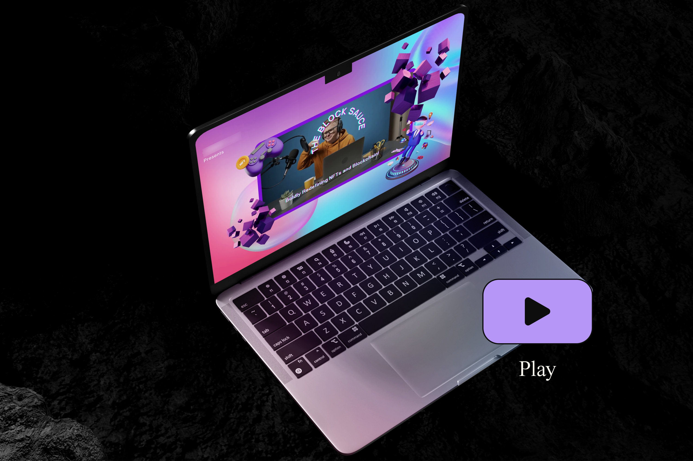

INTRO
To promote a new podcast in the Web3 sector, the creation of visually captivating banners was requested to capture the attention of a broader audience, including those unfamiliar with the topic. In the absence of defined visual guidelines, four banner variants were proposed, exploring different styles to allow the client to select the one most suited to their identity.
To promote a new podcast in the Web3 sector, the creation of visually captivating banners was requested to capture the attention of a broader audience, including those unfamiliar with the topic. In the absence of defined visual guidelines, four banner variants were proposed, exploring different styles to allow the client to select the one most suited to their identity.

THE CHALLENGE
The lack of visual guidelines presented both a challenge and an opportunity. Without a predetermined style, it was essential to create a versatile design that adhered to the tone of the sector while appealing to both a tech audience and the gaming community. Each banner was developed with a specific target in mind, exploring various styles, colours, and techniques to resonate with different digital subcultures.
The lack of visual guidelines presented both a challenge and an opportunity. Without a predetermined style, it was essential to create a versatile design that adhered to the tone of the sector while appealing to both a tech audience and the gaming community. Each banner was developed with a specific target in mind, exploring various styles, colours, and techniques to resonate with different digital subcultures.

THE SOLUTION
Each banner was designed with a distinct visual style to cater to specific audiences and create a coherent yet varied visual narrative. The first option is a 15-second video ad characterised by a humorous, gaming-inspired style commonly used in the cryptocurrency industry. The graphic elements align with industry trends, combining bright colours, glitch text, and engaging animations to draw the attention of the gaming and NFT communities. The second option is also a video banner, but shorter and with a completely different approach: a minimalist style with brutalist influences, experimenting with the “less is more” concept to offer a unique and engaging visual experience.
For the static variants, two solutions were created: the first is a standard Twitter banner that uses gradients and holographic shapes, widely seen in the cryptocurrency sector, featuring an elegant and professional aesthetic that, while echoing the initial video’s palette, maintains a more restrained tone with a slight “gaming” influence. The last version, also in static format, adopts a style similar to its video counterpart, using a combination of black and white with neon accents and bold typography. This style is rapidly gaining popularity in the Web3 industry and proved effective in capturing attention with a strong and unconventional look.
Each banner was designed with a distinct visual style to cater to specific audiences and create a coherent yet varied visual narrative. The first option is a 15-second video ad characterised by a humorous, gaming-inspired style commonly used in the cryptocurrency industry. The graphic elements align with industry trends, combining bright colours, glitch text, and engaging animations to draw the attention of the gaming and NFT communities. The second option is also a video banner, but shorter and with a completely different approach: a minimalist style with brutalist influences, experimenting with the “less is more” concept to offer a unique and engaging visual experience.
For the static variants, two solutions were created: the first is a standard Twitter banner that uses gradients and holographic shapes, widely seen in the cryptocurrency sector, featuring an elegant and professional aesthetic that, while echoing the initial video’s palette, maintains a more restrained tone with a slight “gaming” influence. The last version, also in static format, adopts a style similar to its video counterpart, using a combination of black and white with neon accents and bold typography. This style is rapidly gaining popularity in the Web3 industry and proved effective in capturing attention with a strong and unconventional look.

RESULT
By developing distinct styles, the project provided the client with a comprehensive range of visual options, enabling them to select the design best aligned with the podcast audience. The banners were praised for their ability to communicate effectively and adapt to the various aspects of the Web3 sector, facilitating the promotion of the new podcast in a competitive and dynamic context.
By developing distinct styles, the project provided the client with a comprehensive range of visual options, enabling them to select the design best aligned with the podcast audience. The banners were praised for their ability to communicate effectively and adapt to the various aspects of the Web3 sector, facilitating the promotion of the new podcast in a competitive and dynamic context.